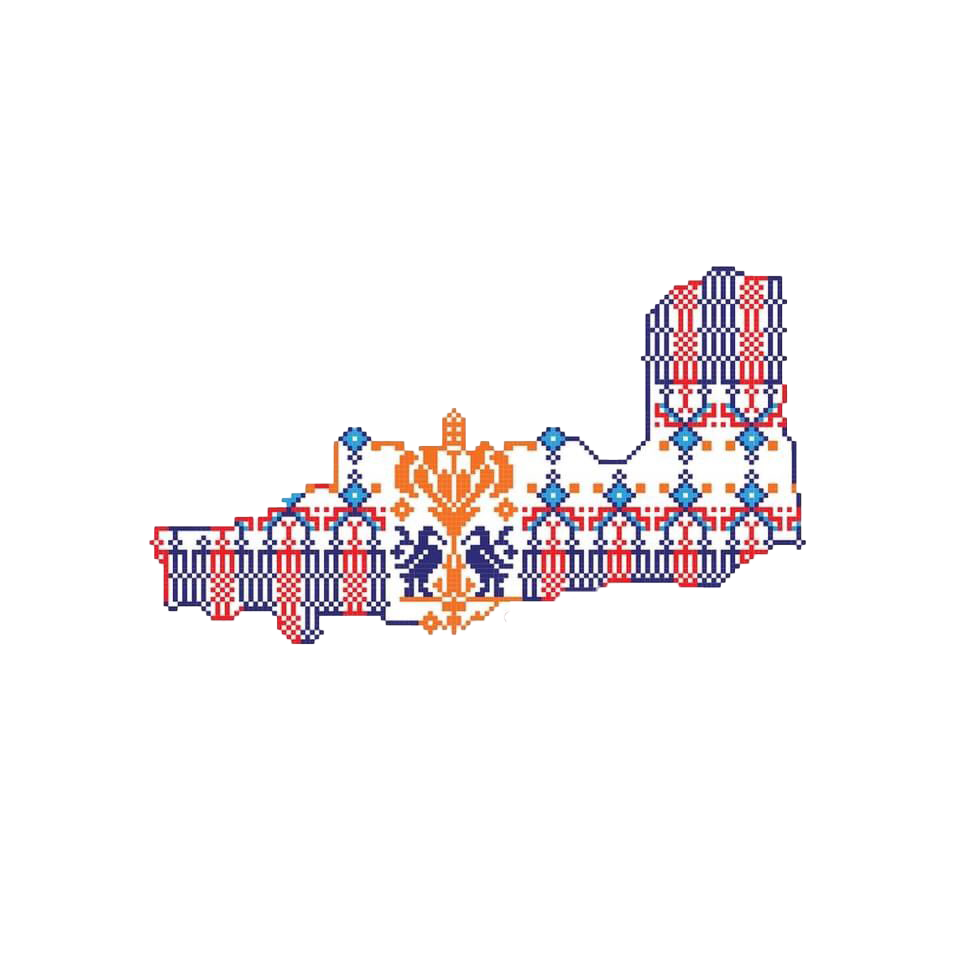

🎨 مميزات تطريز القدس
① الألوان
- الأحمر الداكن—رمز للأصالة والقوة.
- الأزرق—يرمز للسماء والروحانية.
- الأصفر أو الذهبي—يمثل الشمس والخيرات الطبيعية.
- الأسود—لتحديد النقوش وإبراز التباين.
② الغرز
- غرزة الفلة (الصليب) الدقيقة للنقوش الكبيرة والمتكررة.
- غرزة السلسلة—لإطارات القماش والحواف.
- غرزة النقاط—للتفاصيل الدقيقة في الزخارف المعمارية.
③ الرموز الشائعة
- ⭐ القباب والمآذن : مستوحاة من العمارة الإسلامية.
- 🌸 الورود المزخرفة : ترمز للجمال والدقة.
- ✴ الزخارف الهندسية الدقيقة: مستوحاة من النقوش المعمارية .